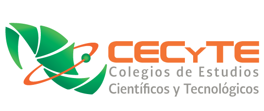

<div id="education" class="view">
  <mat-card class="main">
    <mat-card id="texto">
      <h3 style="font-size: 1.9rem; font-weight: 500;">Mi educación</h3>
      <mat-card class="prepa">
       <div class="row">
        
        <mat-card id="info">
          <mat-card-title>Colegio de Estudios Científicos y Tecnológicos del Estado Plantel Playa del Carmen I <i>(2016-2019)</i></mat-card-title>
          <mat-card-content>
            <p style="font-size: 1rem;">TÍTULO TECNICO BACHILLER SOPORTE Y MNTO. DE EQUIPOS DE CÓMPUTO</p><br>
            <p>Mantenimiento preventivo y correctivo a equipo de cómputo.</p>
          </mat-card-content>
        </mat-card>
       </div>
      </mat-card>
      <mat-card class="universidad">
        <div class="row">
         
         <mat-card id="info">
           <mat-card-title>Universidad Tecnológica de la Riviera Maya | BIS Universities <i>(2019-Presente)</i></mat-card-title>
           <mat-card-content>
            <p style="font-size: 1rem;">TÍTULO TECNICO SUPERIOR UNIVERSITARIO EN TECNOLOGÍAS DE LA INFORMACIÓN ÁREA DESARROLLO DE SOFTWARE MULTIPLATAFORMA (2019-2021)</p><br>
            <p>INGENIERÍA EN GESTIÓN Y DESARROLLO DE SOFTWARE (2022-PRESENTE)</p>
          </mat-card-content>
         </mat-card>
        </div>
       </mat-card>
    </mat-card>
  </mat-card>
</div>
